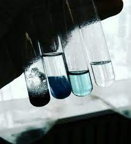
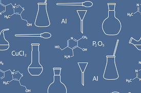

Forensic Chemistry
Forensic chemistry is the application of chemistry and its subfield, forensic toxicology, in a legal setting. A forensic chemist can assist in the identification of unknown materials found at a crime scene.

Chemical Engineering
Chemical engineering is a certain type of engineering which deals with the study of operation and design of chemical plants as well as methods of improving production.
Biochemistry
Biochemistry is the branch of science that explores the chemical processes within and related to living organisms.Biochemistry focuses on processes happening at a molecular level.